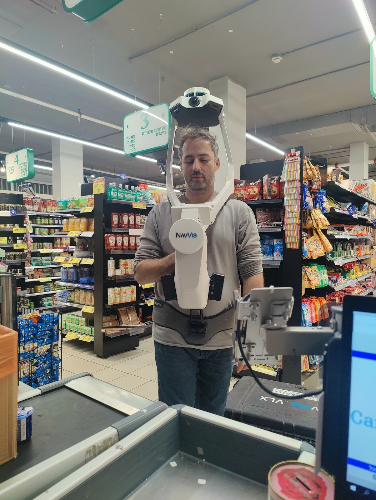

חנויות ושואורום
חנויות אופנה, ריהוט, עיצוב ורכב מציגים את המרחב והמוצרים ומזמינים לקוחות פנימה - עוד לפני שהגיעו.
תנו ללקוחות להיכנס לעסק שלכם ישירות מגוגל, מהאתר ומהרשתות - עוד לפני שהגיעו. סיור 360° אמיתי בונה אמון, מציג את המרחב והמוצרים, ומושך יותר לקוחות אל הדלת. שואורום דיגיטלי שפתוח 24/7.
 צפו בדוגמה לסיור 360° אינטראקטיבי
צפו בדוגמה לסיור 360° אינטראקטיבי

שואורום דיגיטלי 24/7סיור וירטואלי 360° הופך את החנות, השואורום או בית העסק לחוויה דיגיטלית שאפשר לטייל בה מכל מסך. במקום כמה תמונות, הלקוח נכנס אל תוך המרחב, מסתובב בין המדפים והעמדות ומרגיש את האווירה - כאילו הוא כבר בפנים. לקוח שכבר "ביקר" מגיע בטוח יותר, ומי שמחפש אתכם בגוגל מקבל הצצה אמיתית שבונה אמון עוד לפני הפנייה.
לקוח שמכיר את העסק לפני שהגיע - מגיע בטוח יותר וקונה יותר. הסיור עובד עבורכם בגוגל, באתר וברשתות בו-זמנית, 24 שעות ביממה.
הסיור מוטמע בפרופיל Google של העסק, כך שלקוח שמחפש אתכם "נכנס" פנימה כבר מדף החיפוש והמפות - ובולט מעל כל המתחרים באזור.
עסק ששקוף להצגה מרגיש אמין. הלקוח רואה מרחב אמיתי, מסודר ומזמין - וזה מסיר חשש ומגדיל את הסיכוי שיגיע פיזית או ירכוש.
גם כשהעסק סגור, הלקוחות מסתובבים בו. מציגים את המוצרים, את העיצוב ואת האווירה בכל שעה, מכל מקום בעולם - בלי איש צוות.
גולש שמסתובב בסיור נשאר יותר זמן באתר ובפרופיל - אות חיובי לגוגל שמשפר דירוג, לצד יותר צפיות ויותר פניות איכותיות.
הסיורים שלנו נבנים מסריקת לייזר תלת-מימדית - כך שהם לא רק יפים, אלא גם מדויקים ומדידים. כל אלה כלולים בכל סיור לעסק:
 סיור 360° מדיד
סיור 360° מדיד
חנויות אופנה, ריהוט, עיצוב ורכב מציגים את המרחב והמוצרים ומזמינים לקוחות פנימה - עוד לפני שהגיעו.
מעבירים את האווירה, העיצוב והישיבה - סועד שרואה את המקום מראש בוחר להגיע ולהזמין שולחן.
חדרי כושר, ספא, מרפאות וקליניקות - מציגים ניקיון, ציוד ואווירה שמסירים חשש ובונים אמון.
משרדים, חללי עבודה משותפים וסוכנויות מציגים את הסביבה המקצועית ללקוחות ולעובדים פוטנציאליים.
תהליך פשוט ולא מפריע לעסק. הסריקה מתבצעת בשעות שנוחות לכם, והסיור המוכן מגיע בקישור אחד מוכן לשיווק.
שיחה קצרה להבנת גודל העסק והאזורים לסריקה, ובעקבותיה הצעת מחיר שקופה - ללא הפתעות.
מגיעים וסורקים את החלל בלייזר תלת-מימדי בהליכה שקטה, לרוב לפני הפתיחה או אחרי הסגירה - בלי לשבש פעילות.
מעבדים את הסריקה לסיור 360° חלק, מוסיפים תוכנית קומה, תצוגת בית בובות ונקודות מידע על מוצרים ומחירים.
מטמיעים את הסיור בפרופיל Google של העסק, באתר וברשתות - מוכן למשוך לקוחות מהיום הראשון.

נשמח להראות דוגמאות ולהתאים פתרון לחנות, למסעדה או לשואורום. ייעוץ ראשוני - חינם.